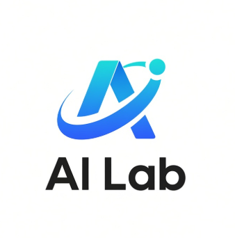

零基础友好
从概念、工具到实践逐步上手，不让技术门槛挡住好奇心。

WFLA AI Lab Artificial Intelligence Club
WFLA AI Lab 是面向所有同学的人工智能实践社团。
从大语言模型、AI 工具到深度学习与智能体，一起学习、创造、发布。
我们以人工智能的应用与实践为核心，欢迎每一个好奇的人。 不要求编程基础，也不要求你已经懂模型——只需要愿意尝试。
这里没有枯燥的单向讲座。我们会把 AI 用进真实的校园任务与创意项目， 在轻松的氛围里带新人、做作品，也让每位成员都能参与成果的诞生。
从概念、工具到实践逐步上手，不让技术门槛挡住好奇心。
不止听懂，更要做出能展示、能上线、能帮助他人的作品。
技术、设计、策划、剪辑都重要，每个人都能找到自己的位置。
每周计划开展两次活动，分别聚焦一个方向。时间冲突时可以选择一条主线， 也欢迎两条都来。具体时段会在活动前通过问卷协调。
用 AI 更高效地完成检索、写作、海报、演示与创意工作；再把前期积累整合成一个公开的 AI 学习网站。
选题会参考成员真实需求：社团宣传、学生会工作、IB 学习任务或个人创作，都可以成为现场案例。
把 AI 放进《我的世界》：从移动与巡逻开始训练，让智能体逐渐掌握游戏技巧，并设计大家都能参与的玩法。
你可以参与地图、策划、测试、开发或视频剪辑；好的玩法来自所有成员一起试、一起改。
围绕具体场景，学习提问、检索、生成、验证与创作。
把想法变成页面、程序、地图、智能体与可测试的玩法。
上线学习网站，展示项目，并让更多人真正用到成果。
计划每周两次，两个项目并行开展；正式开始前会通过问卷选择多数成员有空的时段。
不会编程没关系，没有项目经验也没关系。
带上好奇心，和我们一起 BUILD · PLAY · SHIP。